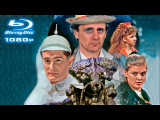
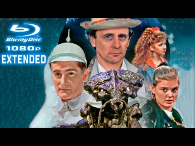

помощник
Субтитры: Русские и Английские |  |
|---|---|
Субтитры: только Английские |  |
Dragonfire
Дата выхода: 23 ноября - 7 декабря 1987
Формат: 3 эпизода по 25 мин.
| | помощник |
Доктор и Мел прибывают на ледяную планету Свартос, где Глитц пытается выторговать сокровища из подземелья. В экспедицию нанимают девушку-подростка по имени Эйс — работницу космопорта с взрывным характером и запасом самодельных бомб. А в подземелье скрывается существо, называющее себя Каном, с весьма мутным прошлым.
Дебют Эйс — Софи Олред в роли, которая станет одной из самых любимых в классическом сериале. Мел уходит с Глитцем — без особой драмы, просто решает, что пора. Финальная сцена, где Доктор спрашивает Эйс «Ты идёшь со мной?» и она отвечает «Да, Доктор», стала знаковой. А знаменитый обрыв, на котором висит Доктор, вызывает вопросы у зрителей до сих пор — как он там держался?
 VHS - февраль 1994 |  DVD+Boxset - 7 мая 2012 |  Blu-ray - 28 июня 2021 * Версия в нашей группе |
|---|